Humidity tells us how much water vapour is in the air. Conservators, scientists and engineers use different ways, called humidity functions, to describe these water vapour levels and how they relate to temperature and moisture in the air.
These functions are very important for things like designing and improving air conditioning systems and managing micro-climates. They also play a role in understanding and preventing damage to humidity sensitive materials and heritage objects, which can be harmed by too much or too little moisture. The humidity functions explained here show how temperature and relative humidity connect. Knowing these relationships helps predict when moisture will form as dew or frost, which can cause problems if not controlled.
It’s important to note that these functions assume normal atmospheric pressure and have been tested for temperatures roughly between 0.5°C and 50°C and for all levels of humidity from dry to fully saturated air (0–100% RH). Outside these ranges, the calculations might be less reliable.
Datasets
mydata
This dataset contains environmental monitoring data collected from example heritage sites.
It includes measurements of temperature (°C) and relative humidity (%) recorded by sensors over time.
| Variable | Description |
|---|---|
| Site | Location name, e.g., “Museum”, “London” |
| Sensor | Identifier for the specific sensor |
| Date | Timestamp of the measurement (POSIXct format) |
| Temp | Air temperature in degrees Celsius |
| RH | Relative humidity as percentage (0-100%) |
Example usage to load the dataset from the package:
filepath <- data_file_path("mydata.xlsx")
mydata <- readxl::read_excel(filepath, sheet = "mydata")
mydata <- mydata |> filter(Sensor == "Room 1")
head(mydata)
#> # A tibble: 6 × 5
#> Site Sensor Date Temp RH
#> <chr> <chr> <dttm> <dbl> <dbl>
#> 1 London Room 1 2024-01-01 00:00:00 21.8 36.8
#> 2 London Room 1 2024-01-01 00:15:00 21.8 36.7
#> 3 London Room 1 2024-01-01 00:29:59 21.8 36.6
#> 4 London Room 1 2024-01-01 00:44:59 21.7 36.6
#> 5 London Room 1 2024-01-01 00:59:59 21.7 36.5
#> 6 London Room 1 2024-01-01 01:14:59 21.7 36.2
mydata |> graph_TRH() + theme_bw() + labs(title = "Room 1", subtitle = "mydata")TRHgrid: Dataset used to visualise the functions
This dataset consists of a grid of temperature and relative humidity values used to visualise function behavior. Temperatures range from 0°C to 100°C in 0.25°C increments, and relative humidity (RH) ranges from 0% to 100% in 1% increments. The complete factorial combination of temperature and RH values is created using expand.grid(), where each pair represents a unique condition.
Contour plots are generated to show interactions between derived variables across the temperature-RH grid. The dataset also supports validation checks for temperature and humidity calculations to understand relationships among the functions.
Example R code to generate the dataset:
Temp <- seq(0, 100, 0.25)
RH <- seq(0, 100, 1)
TRHgrid <-
expand.grid(Temp, RH) |>
tibble() |>
rename(Temp = Var1, RH = Var2)
summary(TRHgrid)
#> Temp RH
#> Min. : 0 Min. : 0
#> 1st Qu.: 25 1st Qu.: 25
#> Median : 50 Median : 50
#> Mean : 50 Mean : 50
#> 3rd Qu.: 75 3rd Qu.: 75
#> Max. :100 Max. :100Example workflows
Adjusting Humidity using the package functions
Starting with measurements of temperature (Temp) and
relative humidity (RH), several derived variables commonly
used can be calculated:
# Functions applied on the mydata dataset
head(mydata) |>
mutate(
Absolute_Humidity = calcAH(Temp, RH),
Dew_Point = calcDP(Temp, RH),
Frost_Point = calcFP(Temp, RH),
Mixing_Ratio = calcMR(Temp, RH),
Specific_Humidity = calcSH(Temp, RH),
Humidity_Ratio = calcHR(Temp, RH),
Enthalpy = calcEnthalpy(Temp, RH),
Saturation_Vapour_Pressure = calcPws(Temp),
Actual_Vapour_Pressure = calcPw(Temp, RH),
RH_VP = 100 * (Actual_Vapour_Pressure / Saturation_Vapour_Pressure),
Air_Density = calcAD(Temp, RH),
Temp_calc = calcTemp(RH, Dew_Point),
RH_AH_calc = calcRH_AH(Temp, Absolute_Humidity),
RH_DP_calc = calcRH_DP(Temp, Dew_Point)
) |>
glimpse()
#> Rows: 6
#> Columns: 19
#> $ Site <chr> "London", "London", "London", "London", "Lo…
#> $ Sensor <chr> "Room 1", "Room 1", "Room 1", "Room 1", "Ro…
#> $ Date <dttm> 2024-01-01 00:00:00, 2024-01-01 00:15:00, …
#> $ Temp <dbl> 21.8, 21.8, 21.8, 21.7, 21.7, 21.7
#> $ RH <dbl> 36.8, 36.7, 36.6, 36.6, 36.5, 36.2
#> $ Absolute_Humidity <dbl> 7.052415, 7.033251, 7.014087, 6.973723, 6.9…
#> $ Dew_Point <dbl> 6.383970, 6.344456, 6.304848, 6.216205, 6.1…
#> $ Frost_Point <dbl> 8.260808, 8.225778, 8.190662, 8.100017, 8.0…
#> $ Mixing_Ratio <dbl> 5.957278, 5.940935, 5.924593, 5.888156, 5.8…
#> $ Specific_Humidity <dbl> 0.8562656, 0.8559272, 0.8555872, 0.8548233,…
#> $ Humidity_Ratio <dbl> 5.957278, 5.940935, 5.924593, 5.888156, 5.8…
#> $ Enthalpy <dbl> 37.15665, 37.11512, 37.07359, 36.87888, 36.…
#> $ Saturation_Vapour_Pressure <dbl> 26.12119, 26.12119, 26.12119, 25.96205, 25.…
#> $ Actual_Vapour_Pressure <dbl> 9.612598, 9.586477, 9.560356, 9.502110, 9.4…
#> $ RH_VP <dbl> 36.8, 36.7, 36.6, 36.6, 36.5, 36.2
#> $ Air_Density <dbl> 1.192445, 1.192457, 1.192469, 1.192899, 1.1…
#> $ Temp_calc <dbl> 21.8, 21.8, 21.8, 21.7, 21.7, 21.7
#> $ RH_AH_calc <dbl> 36.8, 36.7, 36.6, 36.6, 36.5, 36.2
#> $ RH_DP_calc <dbl> 36.8, 36.7, 36.6, 36.6, 36.5, 36.2Principles of Humidity Adjustment
Humidity adjustment involves manipulating Absolute Humidity (AH), Dew Point, or Temperature to achieve a target Relative Humidity (RH). The following principles guide adjustments under the assumption of constant atmospheric pressure (typical for indoor environments):
-
Changing Absolute Humidity:
- Increasing AH at constant temperature raises RH.
- Decreasing AH at constant temperature lowers RH.
-
Changing Temperature:
- Lowering temperature at constant AH raises RH.
- Raising temperature at constant AH lowers RH.
-
Using Dew Point:
- The smaller the difference between air temperature and dew point, the closer the air is to saturation (100% RH).
- Moving temperature closer to dew point increases RH, whereas moving it away decreases RH.
Changing Absolute Humidity
The example below demonstrates adjusting RH by calculating a new
absolute humidity corresponding to a target RH
(tRH) at the measured temperature, and
computing the effects on RH:
# Psychrometric chart of mydata
mydata |>
filter(Sensor == "Room 1") |>
graph_psychrometric(y_func = calcAH) +
labs(title = "Room 1 Before Adjustment") +
theme_classic()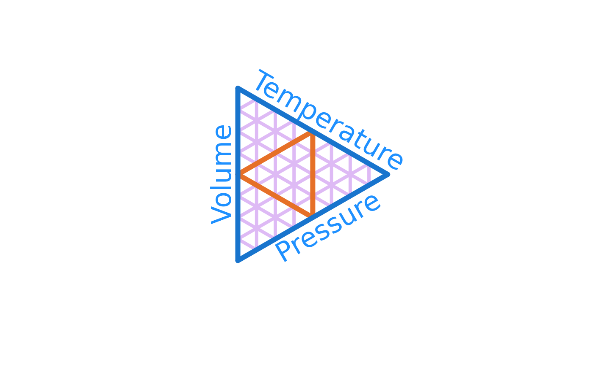
# Changing Absolute Humidity
using_calcAH <-
mydata |>
filter(Sensor == "Room 1") |>
mutate(
# Calculate the Absolute humidity, AH
AH = calcAH(Temp, RH),
# Calculate the Dew point, DP
DP = calcDP(Temp, RH),
# Target RH, tRH
tRH = 50,
# Target Absolute Humidity, AH*
AHstar = calcAH(Temp, tRH),
# Required AH change, difference between AH and AH*
dAH = AHstar - AH,
# Validation check (should be near zero)
AHcheck = AHstar - (AH + dAH),
# New RH after adjustment, RH*
RHstarAH = calcRH_AH(Temp, AHstar),
# RH difference from target
RHerrorAH = RHstarAH - tRH,
)
# View adjustment summary
glimpse(using_calcAH)
#> Rows: 35,136
#> Columns: 13
#> $ Site <chr> "London", "London", "London", "London", "London", "London", …
#> $ Sensor <chr> "Room 1", "Room 1", "Room 1", "Room 1", "Room 1", "Room 1", …
#> $ Date <dttm> 2024-01-01 00:00:00, 2024-01-01 00:15:00, 2024-01-01 00:29:…
#> $ Temp <dbl> 21.8, 21.8, 21.8, 21.7, 21.7, 21.7, 21.7, 21.7, 21.7, 21.6, …
#> $ RH <dbl> 36.8, 36.7, 36.6, 36.6, 36.5, 36.2, 36.3, 36.4, 36.0, 36.0, …
#> $ AH <dbl> 7.052415, 7.033251, 7.014087, 6.973723, 6.954670, 6.897508, …
#> $ DP <dbl> 6.383970, 6.344456, 6.304848, 6.216205, 6.176529, 6.056922, …
#> $ tRH <dbl> 50, 50, 50, 50, 50, 50, 50, 50, 50, 50, 50, 50, 50, 50, 50, …
#> $ AHstar <dbl> 9.582086, 9.582086, 9.582086, 9.526945, 9.526945, 9.526945, …
#> $ dAH <dbl> 2.529671, 2.548835, 2.567999, 2.553221, 2.572275, 2.629437, …
#> $ AHcheck <dbl> 0, 0, 0, 0, 0, 0, 0, 0, 0, 0, 0, 0, 0, 0, 0, 0, 0, 0, 0, 0, …
#> $ RHstarAH <dbl> 50, 50, 50, 50, 50, 50, 50, 50, 50, 50, 50, 50, 50, 50, 50, …
#> $ RHerrorAH <dbl> 7.105427e-15, 7.105427e-15, 7.105427e-15, 0.000000e+00, 0.00…
# Plot of the difference in Absolute humidity and RH error
using_calcAH |>
ggplot() +
geom_line(aes(Date, dAH), col = "cyan4", alpha = 0.8) +
geom_line(aes(Date, RHerrorAH), col = "goldenrod", alpha = 0.8) +
geom_smooth(aes(Date, dAH)) +
labs(title = "Absolute Humidity Required to Achieve Target RH",
subtitle = "Positive values indicate addition of humidity",
x = NULL, y = "Absolute Humidity (g/m^3)") +
theme_bw()
# Psychrometric chart of new data (using_calcAH) after adjustment
using_calcAH |>
filter(Sensor == "Room 1") |>
graph_psychrometric(RH = "RHstarAH", y_func = calcAH) +
labs(title = "Room 1 After Humidity Adjustment") +
theme_classic()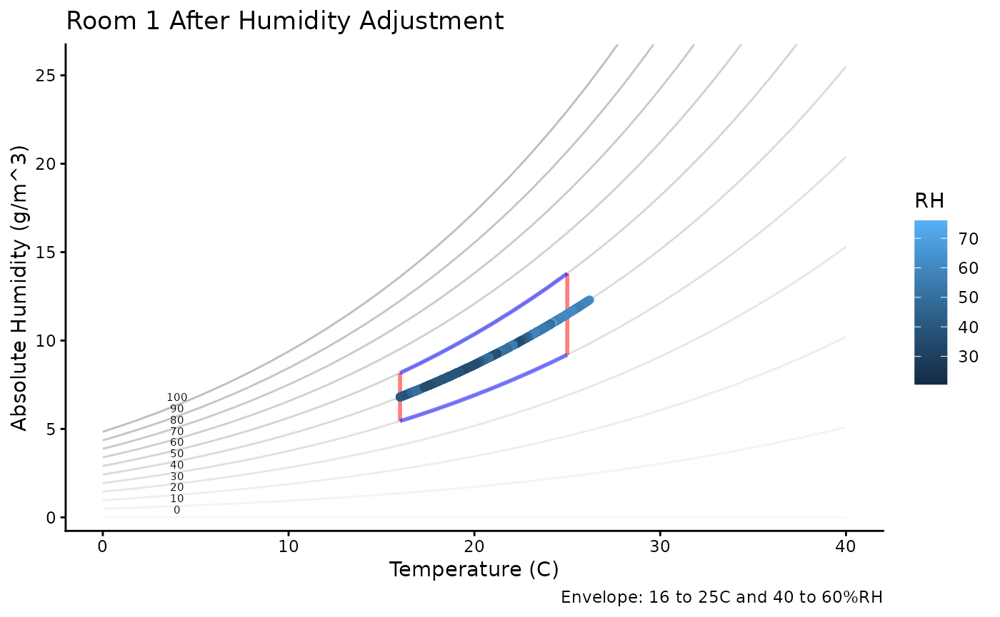
Changing Temperature
# Changing Temperature
using_calcTemp <-
mydata |>
mutate(
# Absolute humidity, AH
AH = calcAH(Temp, RH),
# Dew point, DP
DP = calcDP(Temp, RH),
# Target RH
tRH = 50,
# T*: Tstar new temperature at target RH
Tstar = calcTemp(tRH, DP),
# Difference in measure temperature and new temperature
dTemp = Tstar - Temp,
# Check
Tcheck = Tstar - (Temp + dTemp),
# RHstarT: New humidity with new temperature
RHstarT = calcRH_DP(Tstar, DP),
# Error
RHerrorT = RHstarT - tRH
)
glimpse(using_calcTemp)
#> Rows: 35,136
#> Columns: 13
#> $ Site <chr> "London", "London", "London", "London", "London", "London", "…
#> $ Sensor <chr> "Room 1", "Room 1", "Room 1", "Room 1", "Room 1", "Room 1", "…
#> $ Date <dttm> 2024-01-01 00:00:00, 2024-01-01 00:15:00, 2024-01-01 00:29:5…
#> $ Temp <dbl> 21.8, 21.8, 21.8, 21.7, 21.7, 21.7, 21.7, 21.7, 21.7, 21.6, 2…
#> $ RH <dbl> 36.8, 36.7, 36.6, 36.6, 36.5, 36.2, 36.3, 36.4, 36.0, 36.0, 3…
#> $ AH <dbl> 7.052415, 7.033251, 7.014087, 6.973723, 6.954670, 6.897508, 6…
#> $ DP <dbl> 6.383970, 6.344456, 6.304848, 6.216205, 6.176529, 6.056922, 6…
#> $ tRH <dbl> 50, 50, 50, 50, 50, 50, 50, 50, 50, 50, 50, 50, 50, 50, 50, 5…
#> $ Tstar <dbl> 16.87424, 16.83134, 16.78833, 16.69208, 16.64899, 16.51913, 1…
#> $ dTemp <dbl> -4.925756, -4.968663, -5.011672, -5.007924, -5.051005, -5.180…
#> $ Tcheck <dbl> 0, 0, 0, 0, 0, 0, 0, 0, 0, 0, 0, 0, 0, 0, 0, 0, 0, 0, 0, 0, 0…
#> $ RHstarT <dbl> 50, 50, 50, 50, 50, 50, 50, 50, 50, 50, 50, 50, 50, 50, 50, 5…
#> $ RHerrorT <dbl> -7.105427e-15, 1.421085e-14, 1.421085e-14, 1.421085e-14, 0.00…
# Plot the difference and check the error
using_calcTemp |>
ggplot() +
geom_line(aes(Date, dTemp), col = "firebrick", alpha = 0.8) +
geom_line(aes(Date, RHerrorT), col = "goldenrod", alpha = 0.8) +
geom_smooth(aes(Date, dTemp)) +
labs(title = "Temperature Required to Achieve Target RH",
subtitle = "Positive values indicate increasing the temperature",
x = NULL, y = "Temperature (°C)") +
theme_bw()
using_calcTemp |>
graph_psychrometric(RH = "RHstarT", y_func = calcAH) +
labs(title = "Room 1 After Temperature Adjustment",
subtitle = "Temperature (°C)") +
theme_classic()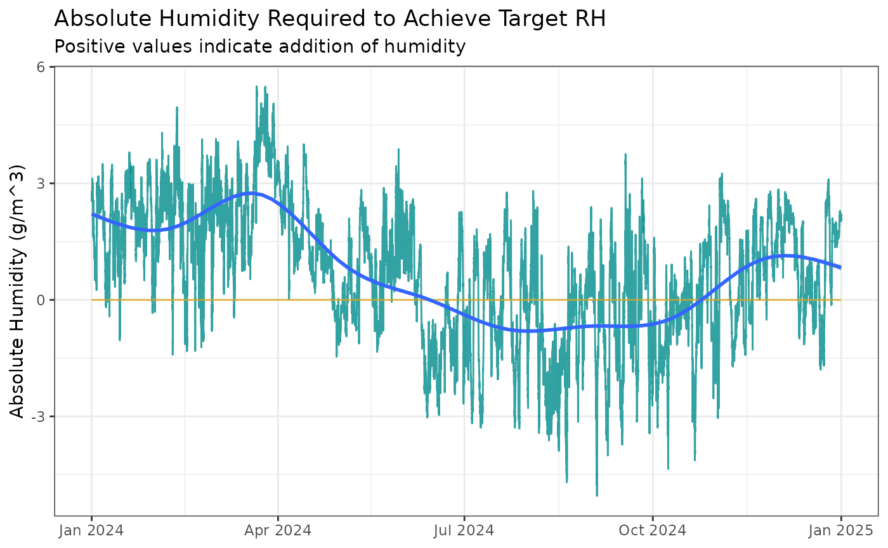
Using Dew Point
# Graph Dew Point
mydata |>
graph_psychrometric(y_func = calcDP) +
labs(title = "Room 1 Before Adjustment",
subtitle = "Dew Point") +
theme_classic()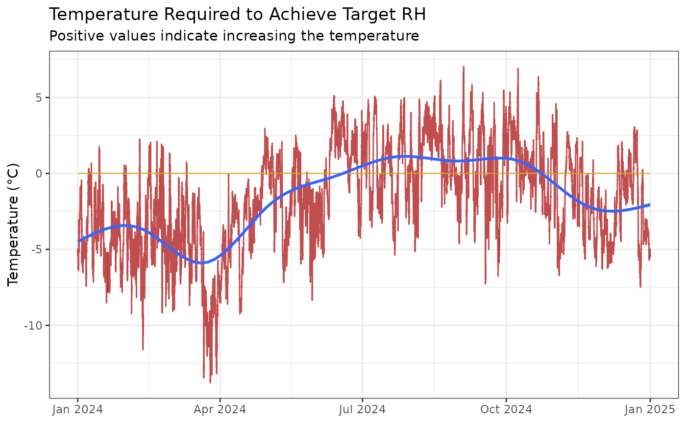
# Using Dew Point
using_calcDP <-
mydata |>
mutate(
# Absolute humidity, AH
AH = calcAH(Temp, RH),
# Dew point, DP
DP = calcDP(Temp, RH),
# Target RH
tRH = 50,
# DP*: DPstar new dew point at target RH
DPstar = calcDP(Temp, tRH),
# RH*: New relative humidity at new dew point
RHstarDP = calcRH_DP(Temp, DPstar),
# Difference in measured dew point and new dew point
dDP = DPstar - DP,
# Error
RHerrorDP = RHstarDP - tRH
)
glimpse(using_calcDP)
#> Rows: 35,136
#> Columns: 12
#> $ Site <chr> "London", "London", "London", "London", "London", "London", …
#> $ Sensor <chr> "Room 1", "Room 1", "Room 1", "Room 1", "Room 1", "Room 1", …
#> $ Date <dttm> 2024-01-01 00:00:00, 2024-01-01 00:15:00, 2024-01-01 00:29:…
#> $ Temp <dbl> 21.8, 21.8, 21.8, 21.7, 21.7, 21.7, 21.7, 21.7, 21.7, 21.6, …
#> $ RH <dbl> 36.8, 36.7, 36.6, 36.6, 36.5, 36.2, 36.3, 36.4, 36.0, 36.0, …
#> $ AH <dbl> 7.052415, 7.033251, 7.014087, 6.973723, 6.954670, 6.897508, …
#> $ DP <dbl> 6.383970, 6.344456, 6.304848, 6.216205, 6.176529, 6.056922, …
#> $ tRH <dbl> 50, 50, 50, 50, 50, 50, 50, 50, 50, 50, 50, 50, 50, 50, 50, …
#> $ DPstar <dbl> 10.91667, 10.91667, 10.91667, 10.82472, 10.82472, 10.82472, …
#> $ RHstarDP <dbl> 50, 50, 50, 50, 50, 50, 50, 50, 50, 50, 50, 50, 50, 50, 50, …
#> $ dDP <dbl> 4.532701, 4.572214, 4.611823, 4.608514, 4.648190, 4.767797, …
#> $ RHerrorDP <dbl> 1.421085e-14, 1.421085e-14, 1.421085e-14, 0.000000e+00, 0.00…
# Plot the difference and check the error
using_calcDP |>
ggplot() +
geom_line(aes(Date, dDP), col = "mediumvioletred", alpha = 0.8) +
geom_line(aes(Date, RHerrorDP), col = "goldenrod", alpha = 0.8) +
geom_smooth(aes(Date, dDP)) +
labs(title = "Dew Point Required to Achieve Target RH",
x = NULL, y = "Dew Point (°C)") +
theme_bw()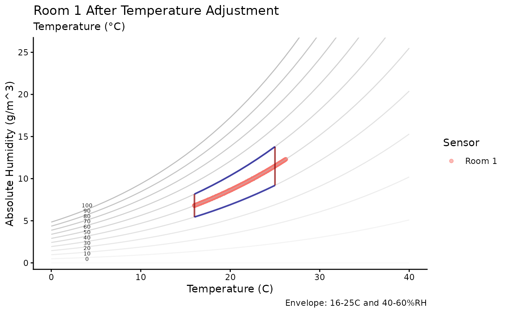
using_calcDP |>
graph_psychrometric(RH = "RHstarDP", y_func = calcDP) +
labs(title = "Room 1 After Dew Point Adjustment",
subtitle = "Dew Point (°C)") +
theme_classic()Functions
Water Vapour Saturation Pressure
calcPws
Water vapour saturation pressure is the pressure at which water vapour in the air is balanced with liquid water at a certain temperature. It is the maximum amount of moisture air can hold at a temperature before the moisture starts to condense into water droplets (like dew or fog). This pressure increases as the temperature rises because warm air can hold more moisture than cold air.
The calcPws function calculates the water vapour
saturation pressure (in hPa) from temperature (in °C) based on one of
several empirical formulations:
- Arden Buck equation (“Buck”) [default]
- International Association for the Properties of Water and Steam (“IAPWS”)
- August-Roche-Magnus approximation (“Magnus”)
- VAISALA humidity conversion formula (“VAISALA”)
Each formulation provides slightly different estimates of saturation pressure, with varying complexities and accuracies suited to different applications. A discussion of the benefits and comparative accuracy of each equation can be found on Wikipedia: https://en.wikipedia.org/wiki/Vapour_pressure_of_water#cite_note-1
# Psychrometric graph of Saturation vapour Pressure calculated via `calcPws`
mydata |>
graph_psychrometric(y_func = calcPws) +
theme_bw()
# Contour plot of saturation vapour pressure over temperature and humidity grid
TRHgrid |>
mutate(Pws = calcPws(Temp)) |>
ggplot(aes(Temp, RH, z = Pws)) +
geom_contour_filled(bins = 15) +
labs(title = "Saturation Vapour Pressure", x = "Temperature (°C)", y = "Humidity (%)",
fill = "hPa") +
theme_bw()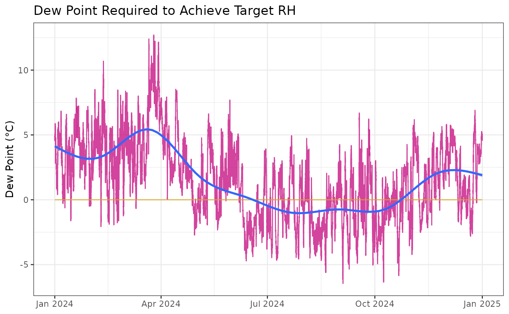
# Comparison of saturation vapour pressure calculated using different methods
mydata |>
dplyr::mutate(
Pw_Buck = calcPws(Temp, method = "Buck"),
Pw_IAPWS = calcPws(Temp, method = "IAPWS"),
Pw_Magnus = calcPws(Temp, method = "Magnus"),
Pw_VAISALA = calcPws(Temp, method = "VAISALA")
) |>
ggplot() +
geom_line(aes(Date, Pw_Buck), col = "darkblue", alpha = 0.2) +
geom_line(aes(Date, Pw_IAPWS), col = "darkred", alpha = 0.2) +
geom_line(aes(Date, Pw_Magnus), col = "darkgreen", alpha = 0.2) +
geom_line(aes(Date, Pw_VAISALA), col = "orange", alpha = 0.2) +
labs(title = "Comparison of saturation vapour pressure equations",
subtitle = "Buck (blue), IAPWS (red), Magnus (green), VAISALA (orange)",
y = "Water vapour saturation pressure (hPa)", x = NULL) +
theme_bw()Water Vapour Pressure
calcPw
Water vapour pressure is the pressure exerted by water molecules when they are in the air as a gas. It reflects how much moisture is actually present in the air at a given temperature.
Unlike saturation vapour pressure—which is the maximum water vapour pressure the air can hold at that temperature—water vapour pressure tells us the current moisture level in the air.
The function calcPw calculates this water vapour
pressure from temperature and relative humidity.
# Psychrometric graph of Water Vapour Pressure calculated via `calcPw`, Buck method
mydata |>
graph_psychrometric(y_func = calcPw) +
theme_bw()
# # Contour plot of water vapour pressure over temperature and humidity grid
TRHgrid |>
mutate(Pw = calcPw(Temp, RH)) |>
ggplot(aes(Temp, RH, z = Pw)) +
geom_contour_filled(bins = 15) +
labs(title = "Water Vapour Pressure",
x = "Temperature (°C)", y = "Humidity (%)") +
labs(title = "Water Vapour Pressure", x = "Temperature (°C)", y = "Humidity (%)",
fill = "hPa") +
theme_bw()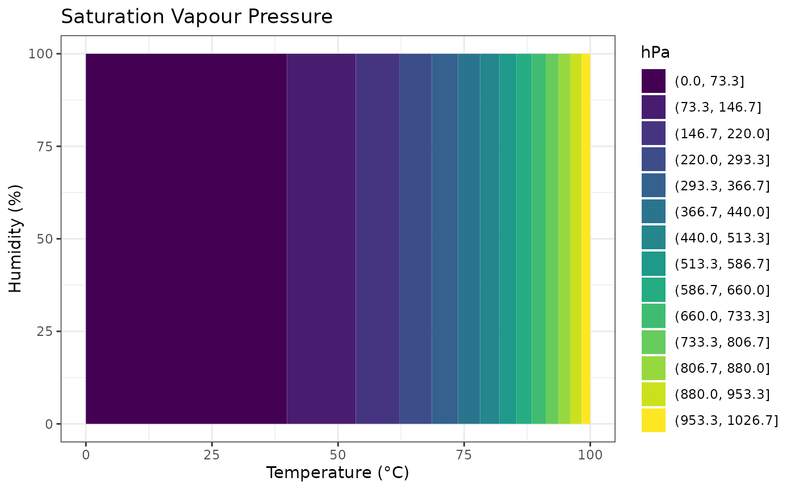
Temperature
calcTemp
The temperature calculation function, calcTemp, uses
measurements of dew point and relative humidity to estimate the air
temperature. This is useful to check how accurately temperature can be
derived from humidity-related data. Dew point is calculated using
calcDP.
The dew point is the temperature at which air becomes saturated and water vapour starts to condense. Using dew point and relative humidity together provides a way to calculate temperature indirectly.
# Calculate Dew Point and Temperature from dataset
head(mydata) |>
dplyr::mutate(
DewPoint = calcDP(Temp, RH),
Temp_via_DP = calcTemp(RH, DewPoint),
Temp_error = Temp_via_DP - Temp
)
#> # A tibble: 6 × 8
#> Site Sensor Date Temp RH DewPoint Temp_via_DP Temp_error
#> <chr> <chr> <dttm> <dbl> <dbl> <dbl> <dbl> <dbl>
#> 1 London Room 1 2024-01-01 00:00:00 21.8 36.8 6.38 21.8 -3.55e-15
#> 2 London Room 1 2024-01-01 00:15:00 21.8 36.7 6.34 21.8 0
#> 3 London Room 1 2024-01-01 00:29:59 21.8 36.6 6.30 21.8 0
#> 4 London Room 1 2024-01-01 00:44:59 21.7 36.6 6.22 21.7 -3.55e-15
#> 5 London Room 1 2024-01-01 00:59:59 21.7 36.5 6.18 21.7 0
#> 6 London Room 1 2024-01-01 01:14:59 21.7 36.2 6.06 21.7 0 The difference (Temp_error) between calculated and
actual temperature reveals the accuracy of the calculation across
varying temperature and relative humidity in the TRHgrid dataset.
Smaller values mean less error.
# Error plot to visualise difference between calculated and original temperature
TRHgrid |>
mutate(
DewPoint = calcDP(Temp, RH),
Temp_via_DP = calcTemp(RH, DewPoint),
Temp_error = Temp_via_DP - Temp
) |>
ggplot(aes(Temp, RH, z = Temp_error)) +
geom_contour_filled() +
labs(title = "Difference between calculated and actual temperature",
subtitle = "Shows accuracy of calculation",
x = "Temperature (°C)", y = "Humidity (%)", fill = "Difference") +
theme_bw()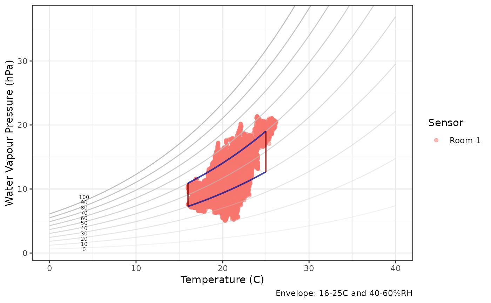
Relative Humidity
-
calcRH_AHandcalcRH_DP
Relative humidity (RH) is a measure of how much moisture is in the air compared to the maximum amount the air can hold at that temperature. It is expressed as a percentage: 100% means the air is fully saturated and can hold no more moisture.
The package includes two ways to calculate relative humidity:
-
Using Dew Point (
calcRH_DP): This method uses the temperature and the dew point (the temperature at which air becomes saturated) to calculate relative humidity. It’s a common approach because dew point is often directly measured or estimated. -
Using Absolute Humidity (
calcRH_AH): This method uses the temperature and absolute humidity (the actual amount of moisture in the air) to calculate relative humidity.
Contour plots compare the relative humidity calculated from these functions against the original measured RH values, showing how closely they match, and where errors or differences occur.
# Calculate RH from Dew Point
head(mydata) |>
dplyr::mutate(
DewPoint = calcDP(Temp, RH),
RH_via_DP = calcRH_DP(Temp, DewPoint),
RH_DP_error = RH_via_DP - RH
)
#> # A tibble: 6 × 8
#> Site Sensor Date Temp RH DewPoint RH_via_DP RH_DP_error
#> <chr> <chr> <dttm> <dbl> <dbl> <dbl> <dbl> <dbl>
#> 1 London Room 1 2024-01-01 00:00:00 21.8 36.8 6.38 36.8 0
#> 2 London Room 1 2024-01-01 00:15:00 21.8 36.7 6.34 36.7 7.11e-15
#> 3 London Room 1 2024-01-01 00:29:59 21.8 36.6 6.30 36.6 0
#> 4 London Room 1 2024-01-01 00:44:59 21.7 36.6 6.22 36.6 0
#> 5 London Room 1 2024-01-01 00:59:59 21.7 36.5 6.18 36.5 0
#> 6 London Room 1 2024-01-01 01:14:59 21.7 36.2 6.06 36.2 0
# Error plot for RH from Dew Point
TRHgrid |>
mutate(
DewPoint = calcDP(Temp, RH),
RH_DPcalc = calcRH_DP(Temp, DewPoint),
RH_DP_error = RH_DPcalc - RH
) |>
ggplot(aes(Temp, RH, z = RH_DP_error)) +
labs(title = "Difference between calculated and actual humidity",
subtitle = "RH calc from dew point minus original RH",
x = "Temperature (°C)", y = "Humidity (%)", fill = "Difference") +
geom_contour_filled() +
theme_bw()
# Calculate RH from Absolute Humidity
head(mydata) |>
dplyr::mutate(
AH = calcAH(Temp, RH),
RH_via_AH = calcRH_AH(Temp, AH),
RH_AH_error = RH_via_AH - RH
)
#> # A tibble: 6 × 8
#> Site Sensor Date Temp RH AH RH_via_AH RH_AH_error
#> <chr> <chr> <dttm> <dbl> <dbl> <dbl> <dbl> <dbl>
#> 1 London Room 1 2024-01-01 00:00:00 21.8 36.8 7.05 36.8 7.11e-15
#> 2 London Room 1 2024-01-01 00:15:00 21.8 36.7 7.03 36.7 7.11e-15
#> 3 London Room 1 2024-01-01 00:29:59 21.8 36.6 7.01 36.6 7.11e-15
#> 4 London Room 1 2024-01-01 00:44:59 21.7 36.6 6.97 36.6 7.11e-15
#> 5 London Room 1 2024-01-01 00:59:59 21.7 36.5 6.95 36.5 7.11e-15
#> 6 London Room 1 2024-01-01 01:14:59 21.7 36.2 6.90 36.2 0
# Error plot for RH from Absolute Humidity
TRHgrid |>
mutate(RH_AH_error = calcRH_AH(Temp, calcAH(Temp, RH)) - RH) |>
ggplot(aes(Temp, RH, z = RH_AH_error)) +
labs(title = "Difference between calculated and actual humidity",
subtitle = "RH calc from absolute humidity minus original RH",
x = "Temperature (°C)", y = "Humidity (%)", fill = "Difference") +
geom_contour_filled() +
theme_bw()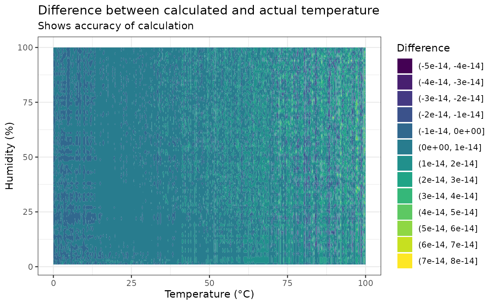
Absolute Humidity
calcAH
Absolute humidity (AH) measures the actual amount of water vapour present in the air, regardless of temperature. It is expressed as the mass of water vapour per volume of air (e.g., grams per cubic meter). In contrast to relative humidity, absolute humidity represents the true moisture content and does not change directly when temperature changes.
The function calcAH calculates absolute humidity from
temperature and relative humidity measurements.
# Graph Absolute Humidity
mydata |>
graph_psychrometric(y_func = calcAH) +
theme_bw()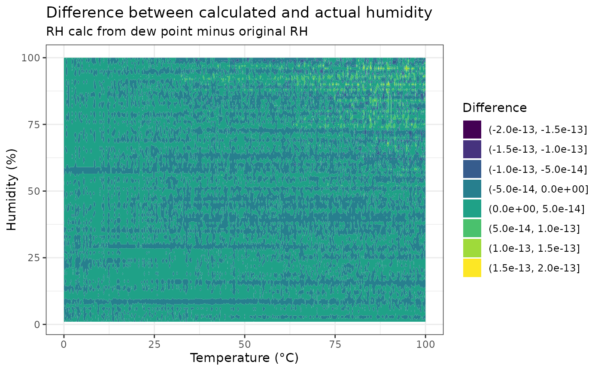
# Contour plot over temperature-relative humidity grid
TRHgrid |>
mutate(AH = calcAH(Temp, RH)) |>
ggplot(aes(Temp, RH, z = AH)) +
geom_contour_filled(bins = 15) +
labs(title = "Absolute Humidity", x = "Temperature (°C)", y = "Humidity (%)",
fill = "g/m^3") +
theme_bw()
Dew Point
calcDP
Dew point (DP) is the temperature at which air becomes fully saturated with moisture and water vapour begins to condense into liquid water—forming dew, fog, or frost. It basically tells us how much moisture is in the air.
- If the air cools down to the dew point temperature, moisture will start to appear as water droplets.
- The closer the dew point is to the actual air temperature, the higher the relative humidity and the muggier or damper the air feels.
- Dew point stays the same even if the air temperature changes, making it a reliable indicator of moisture content.
The function calcDP calculates the dew point temperature
from measured air temperature and relative humidity. It offers two
calculation methods:
- Magnus (default): August-Roche-Magnus approximation, suitable for temperatures 0°C to 60°C and humidity 1% to 100%.
- Buck: Arden Buck equation with Bögel modification, often providing greater accuracy, especially at low temperatures (down to -30°C).
# Psychrometric graph of dew point
mydata |>
graph_psychrometric(y_func = calcDP) +
theme_bw() 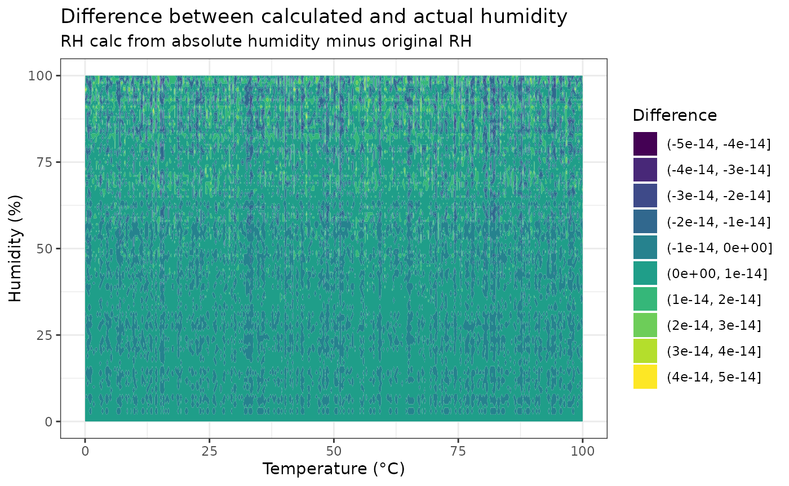
# Contour plot of dew point over temperature and RH
TRHgrid |>
mutate(DP = calcDP(Temp, RH)) |>
ggplot(aes(Temp, RH, z = DP)) +
geom_contour_filled(bins = 15) +
labs(title = "Dew Point", x = "Temperature (°C)", y = "Humidity (%)",
fill = "°C") +
theme_bw()
Frost Point
calcFP
Frost Point (FP) is the temperature at which water vapour in air condenses as ice rather than liquid water. It is relevant when air temperature and dew point fall below freezing, indicating conditions for frost formation. Frost point helps in understanding moisture behavior in cold environments, which is crucial for conservation, meteorology, and climate control.
The calcFP function computes frost point temperature from measured air temperature and relative humidity, extending dew point calculations below 0°C by considering vapour pressure over ice.
# Calculate Frost Point and add to mydata
mydata |>
mutate(FP = calcFP(Temp, RH)) |>
graph_TRH() +
geom_line(aes(Date, FP), col = "cornflowerblue") +
labs(title = "Frost Point (light blue)") +
theme_bw()
# Contour plot of frost point temperature over temperature and relative humidity grid
TRHgrid |>
mutate(FrostPoint = calcFP(Temp, RH)) |>
ggplot(aes(Temp, RH, z = FrostPoint)) +
geom_contour_filled(bins = 15) +
labs(title = "Frost Point", x = "Temperature (°C)", y = "Humidity (%)",
fill = "°C") +
theme_bw()
Specific Humidity
calcSH
Specific humidity (SH) measures the amount of water vapour in the air relative to the total mass of the air, including both dry air and the water vapour. It is usually expressed in grams of water vapour per kilogram of moist air (g/kg).
Unlike relative humidity, which depends on temperature, specific humidity directly quantifies the actual moisture content in the air and does not change with temperature or pressure.
- Specific humidity differs slightly from the mixing ratio, which measures the mass of water vapour relative only to the mass of dry air. The key difference is that specific humidity divides by the total air mass (dry air plus water vapour), while the mixing ratio divides only by the dry air mass. Because the mass of water vapour is usually much smaller than the mass of dry air, the two values are very similar, but specific humidity is always slightly less than the mixing ratio.
The function calcSH calculates specific humidity from
temperature and relative humidity data, which helps in understanding the
true moisture amount in air regardless of changes in temperature.
# Psychrometric graph of specific humidity
mydata |>
graph_psychrometric(y_func = calcSH) +
theme_bw()
# Contour plot of specific humidity over temperature and RH
TRHgrid |>
mutate(SH = calcSH(Temp, RH)) |>
ggplot(aes(Temp, RH, z = SH)) +
geom_contour_filled(bins = 15) +
labs(title = "Specific Humidity", x = "Temperature (°C)", y = "Humidity (%)",
fill = "g/kg") +
theme_bw()
Mixing Ratio
calcMR
Mixing ratio (MR) is the mass of water vapour per unit mass of dry air in a given volume. It is commonly expressed in grams of water vapour per kilogram of dry air (g/kg). This measure is important because it remains nearly constant when the air changes temperature or pressure, making it useful for tracking moisture content in moving air masses.
- The mixing ratio tells us how much water vapour is mixed into dry air.
- It differs slightly from specific humidity (which is water vapour per total moist air) but is closely related.
- While both mixing ratio and specific humidity measure how much water vapour is in the air, the key difference lies in their denominators: mixing ratio expresses the mass of water vapour relative only to the mass of dry air, whereas specific humidity expresses it relative to the total mass of the moist air (dry air plus water vapour). Because the mass of water vapour is usually small compared to dry air, both values are very similar, but specific humidity is always slightly less than the mixing ratio.
- The mixing ratio is a fundamental concept used in meteorology, air conditioning, and conservation for understanding and controlling humidity.
The function calcMR calculates the mixing ratio from
temperature and relative humidity data.
# Psychrometric graph of mixing ratio
mydata |>
graph_psychrometric(y_func = calcMR) +
theme_bw()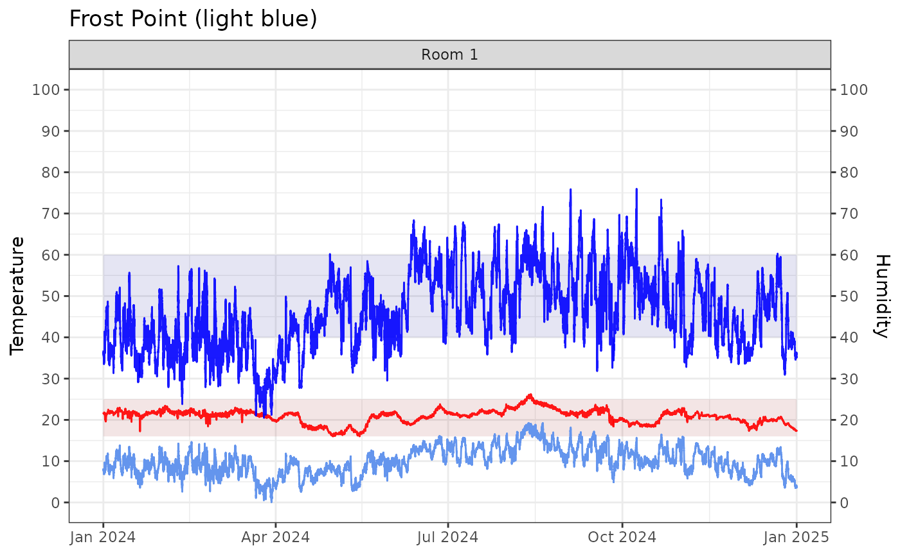
# Contour plot of mixing ratio over temperature and RH
TRHgrid |>
mutate(MR_log10 = calcMR(Temp, RH) |> log10()) |>
ggplot(aes(Temp, RH, z = MR_log10)) +
geom_contour_filled(bins = 15) +
labs(title = "Mixing Ratio (log)", x = "Temperature (°C)", y = "Humidity (%)",
fill = "log10(g/kg)") +
theme_bw()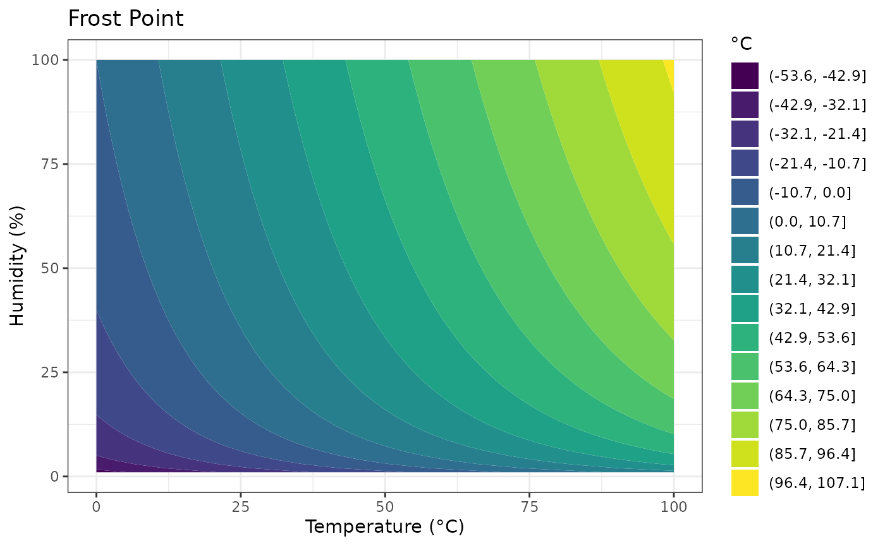
Humidity Ratio
calcHR
Humidity ratio (HR) (also known as the mixing ratio) is the mass of water vapour present per unit mass of dry air, typically expressed in grams of water vapour per kilogram of dry air (g/kg). It quantifies the actual moisture content in the air relative to the dry air component only.
- Humidity ratio is an essential measure in meteorology, HVAC, and conservation, as it stays almost constant with changes in temperature or pressure, except when air is cooled below its dew point.
- It is used as a standard axis in psychrometric charts to represent moisture content.
- Unlike absolute humidity (which is mass of water vapour per volume of air), humidity ratio expresses water vapour relative to dry air mass, making it more stable for air mass comparisons.
The function calcHR calculates humidity ratio from
temperature and relative humidity data.
# Psychrometric graph of humidity ratio
mydata |>
graph_psychrometric(y_func = calcHR) +
theme_bw()
# Contour plot of humidity ratio over temperature and RH
TRHgrid |>
mutate(HumidityRatio = calcHR(Temp, RH) |> log10()) |>
ggplot(aes(Temp, RH, z = HumidityRatio)) +
geom_contour_filled(bins = 15) +
labs(title = "Humidity Ratio", x = "Temperature (°C)", y = "Humidity (%)",
fill = "log10(g/kg)") +
theme_bw()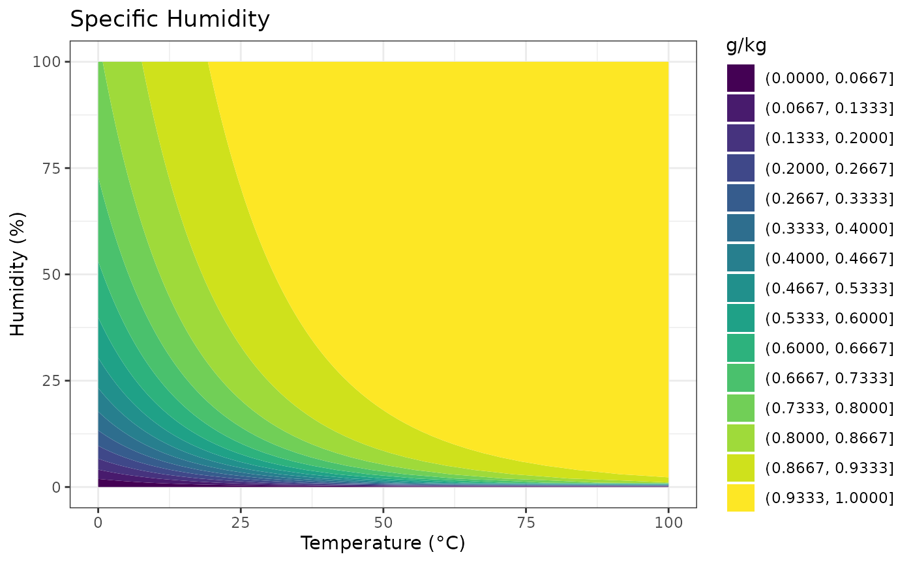
Air Density
calcAD
Air density (AD) is the mass of air per unit volume, typically expressed in kilograms per cubic meter (kg/m³). It depends on temperature, atmospheric pressure, and humidity.
- Warm air is less dense than cold air because increasing temperature causes air to expand and occupy a larger volume.
- Humid air is less dense than dry air because water vapour has a lower molecular weight than the major components of dry air.
- Air density influences many physical processes, including heat exchange, airflow, and buoyancy.
The function calcAD calculates air
density based on temperature and relative humidity values.
# Psychrometric graph of air density
mydata |>
graph_psychrometric(y_func = calcAD) +
theme_bw()Enthalpy
calcEnthalpy
Enthalpy is the total heat energy content in moist air, combining both the sensible heat from air temperature and the latent heat carried by water vapour. It is usually measured in kilojoules per kilogram (kJ/kg) of dry air.
- Enthalpy increases with both higher air temperature and higher moisture content.
- It is a key quantity for understanding heating, cooling, and humidification processes, as it reflects the energy required to change air temperature or moisture.
The function calcEnthalpy computes
enthalpy using temperature and relative humidity.
# Psychrometric graph of enthalpy
mydata |>
graph_psychrometric(y_func = calcEnthalpy) +
theme_bw()
# Contour plot of enthalpy over temperature and RH
TRHgrid |>
mutate(Enthalpy_log10 = calcEnthalpy(Temp, RH) |> log10()) |>
ggplot(aes(Temp, RH, z = Enthalpy_log10)) +
geom_contour_filled(bins = 15) +
labs(title = "Enthalpy (log)", x = "Temperature (°C)", y = "Humidity (%)",
fill = "log(kJ/kg)") +
theme_bw()